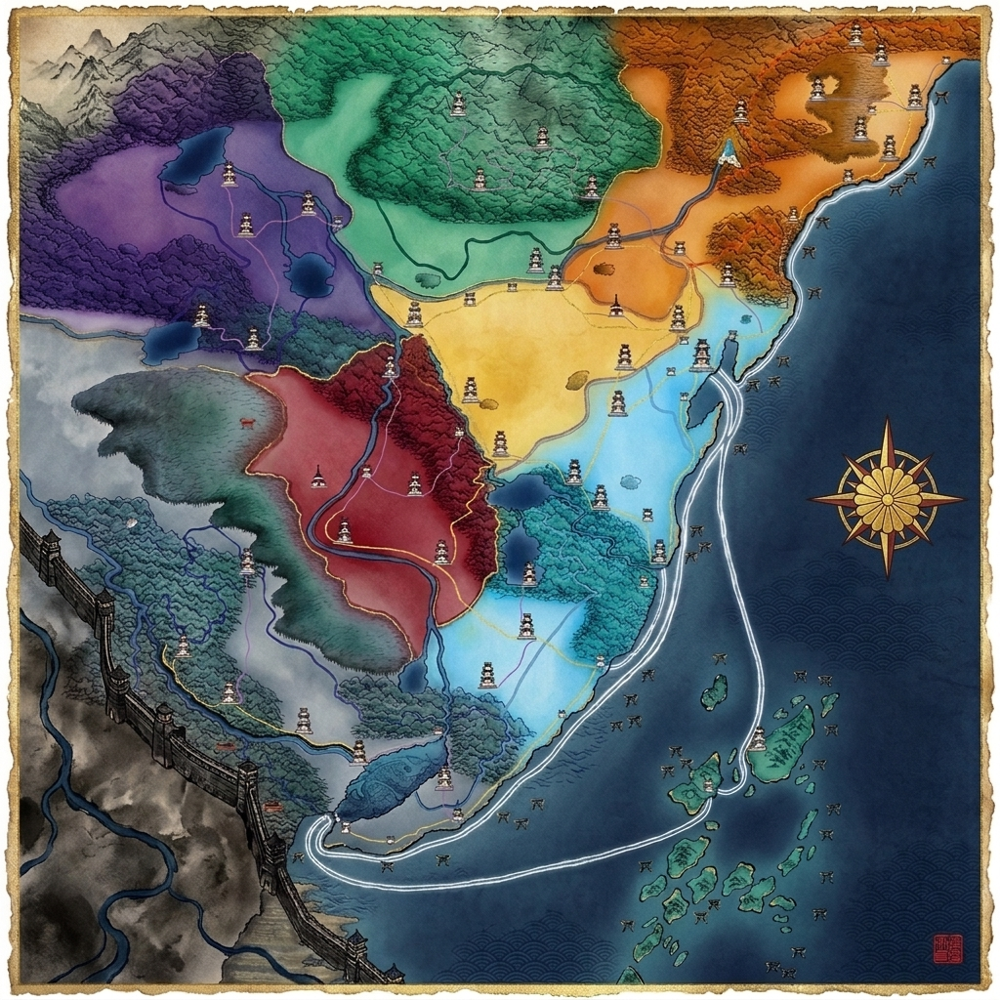

地 Atlas de l'Empire d'Émeraude • Campagne de la Chronique de Rokugan
CARTE INTERACTIVE DE ROKUGAN
Explorez les cités impériales, forteresses des 8 Grands Clans, cols et territoires périlleux, et tracez pas à pas le périple des PJ du Championnat de Topaze (Acte 1) jusqu'à Écho du sang (Acte 11).
Actes 1 à 11 / 11
Molette pour zoomer • Glisser pour déplacer • Cliquer un repère pour les détails
100%
